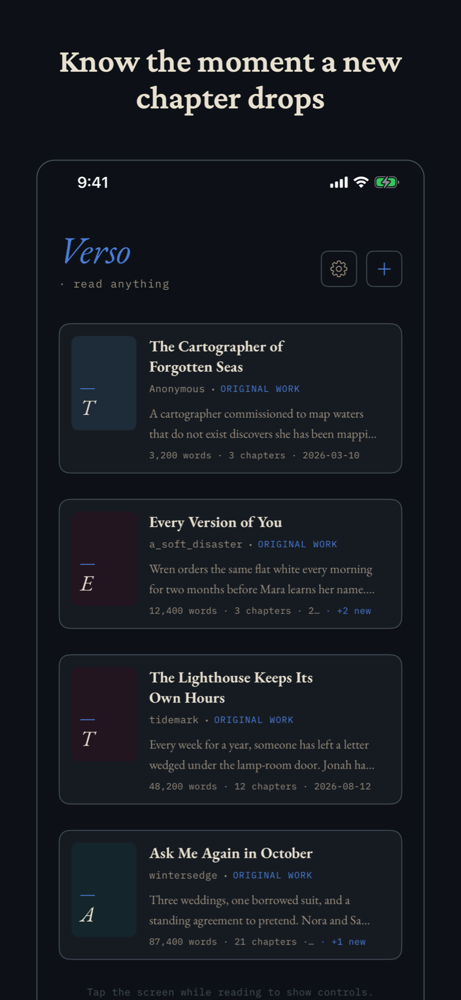
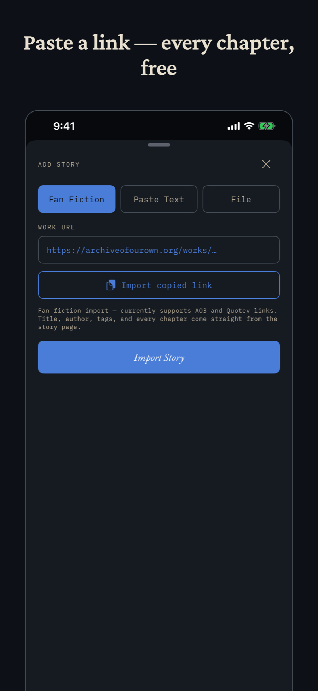
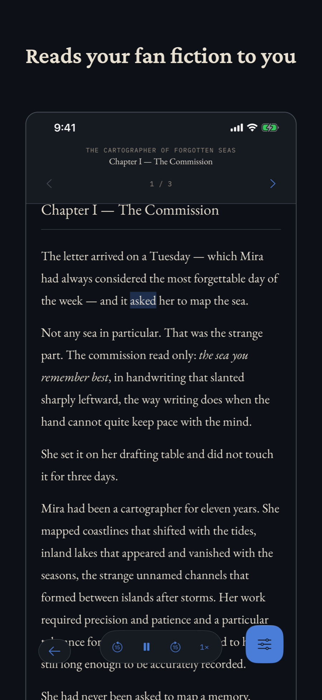
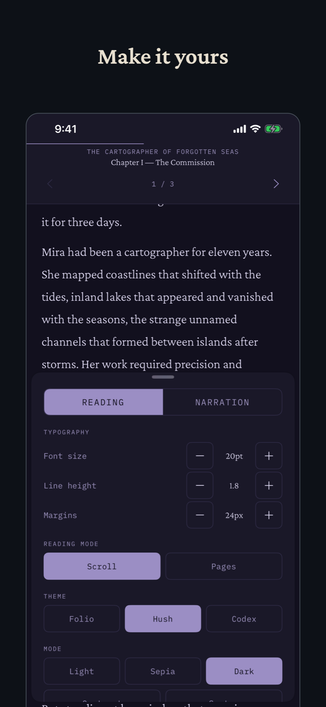
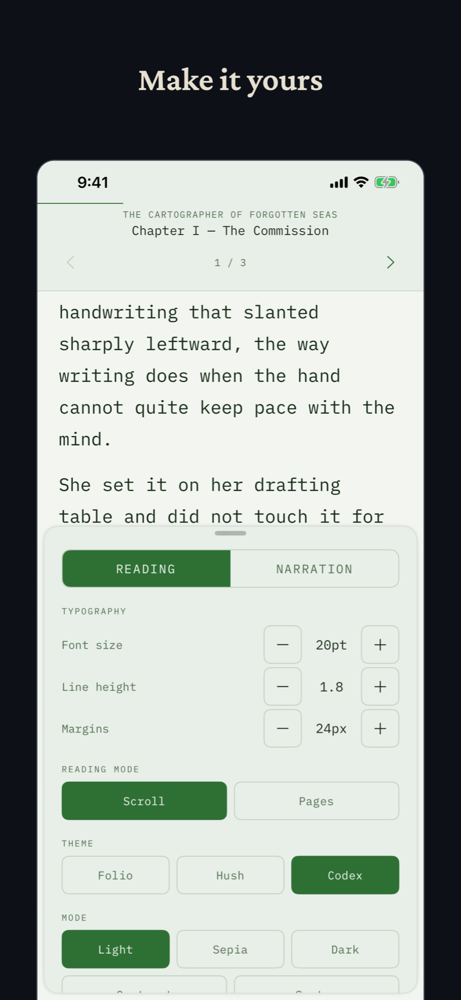
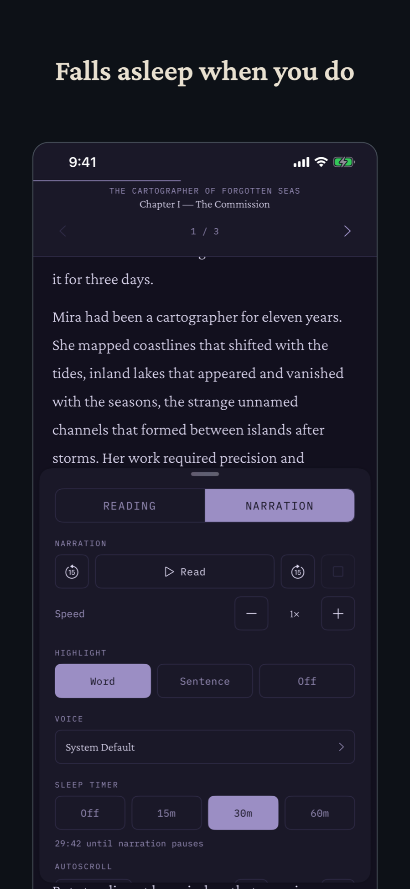

AO3 works, EPUBs, and pasted text in one library, with word-synced narration that keeps playing on the lock screen. Prototyped in React Native; shipped as native SwiftUI.
Three ways in: a fan fiction link, pasted text, or a file. A link brings title, author, tags, and every chapter. The shelf flags new chapters.



Theme sets the type: Folio, Hush, Codex. Mode sets the light: Light, Sepia, Dark. Any theme works in any mode.


Word, sentence, or no highlight. Speed, voice, and a sleep timer. Keeps playing on the lock screen.
iOS ships thin default voices; the better ones are free but buried. The voice picker gives the path: Settings → Accessibility → Spoken Content → Voices.

No account, analytics, or ads. Narration runs on-device; the only network call fetches the AO3 work you ask for. Unofficial AO3 reader.
Free. iPhone. No ads, no accounts, no tracking.